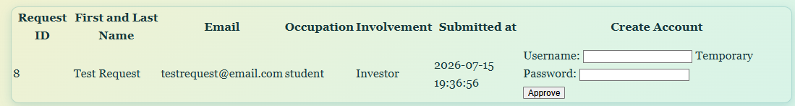
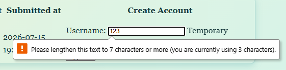
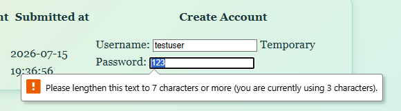
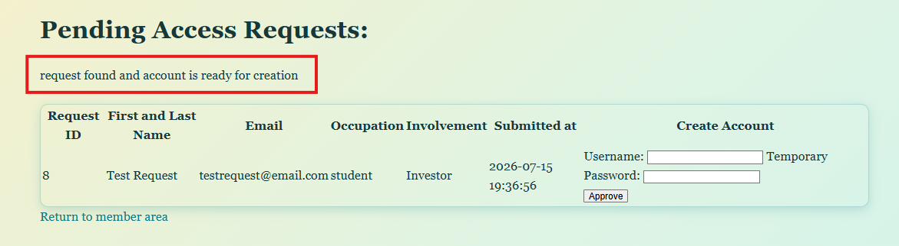

With the admin account made, I began to work on a webpage that will display the access_request schema in a new PHP called "manage_requests.php".
This allows for easy approval, username, and password creation and feels a lot more like a real website.
The plan is:
An admin logs into manage_requests.php
The table of requests loads
The admin can approve/deny the request
The admin can grant a temporary username/password
This will probably be permanent for the purpose of this project, but ideally:
The person who requested access can log into their new account and configure their own username and password which is stored in the database and allows for constant permanent login.
This allows to easily and realistically approve requests instead of terminal-based commands or phpMyAdmin.
PHP setup
Admin only access
The first part was starting a session in the new file, and checking if the user is an admin:
session_start();
// load the DB connection
require_once __DIR__ . '/db.php';
// login.php sets $_SESSION to be logged in to true, so we're gonna check that
// if someone is NOT logged in, send them back to the login page
if (!isset($_SESSION['logged_in']) || $_SESSION['logged_in'] !== true) {
header("Location: ../html/login.html");
exit("Please log in.");
}
// check if the user logged in is the LiF Admin account:
// use user-role or an empty string
if(($_SESSION['user_role'] ?? '') !== 'admin') {
// unauthorized access
http_response_code(403);
exit("Access denied; Admin perms required for entry to this page. Please return and login.");
}
Get contents
From there, we can query the DB and pull up its contents from the access_request schema:
// next, we want to query the DB and grab all requests that are "pending"
// query the DB to grab important information to use using a string
$query = "
SELECT
request_id,
first_name,
last_name,
email,
person_type,
involvement,
submitted_at
FROM access_requests
WHERE request_status = 'pending'
ORDER BY submitted_at ASC
";
// this block will query the SQL to grab these items FROM access_request DB, specifically entries where request_status is pending
// and it will be ordered by submission time
// execute the query:
$statement = $pdo->query($query);
// retreive the data
$requests = $statement->fetchAll();
From here, the data was organized into a neat HTML table by using PHP variables. See below:
This made a really basic table and had a form inside as seen here:

Initial manage-access table with an account-creation form
Then, there are some error checks:
Username too short:

Username-length validation on the manage-access form
Password too short:

Password-length validation on the manage-access form
PHP to handle the form
Here is the PHP on how that form was organized.
Lastly, there is a code snippet that consults the actual DB and checks if the "Request ID" matches up to prevent any funny business. Here is how it was implemented:
// if nothing returned
if(!$selectedRequest) {
$errors[] = "the selected request does not exist";
// if the request is NOT pending (denied, approved)
} else if ($selectedRequest['request_status'] !== 'pending') {
$errors[] = "the selected request has already been reviewed";
// if it exists and IS pending (since it's not any other form), it is ready
} else {
$formMessage = "request found and account is ready for creation";
}

Manage-access page confirming that the selected request was found
That was about it for this entry as it was too late to keep working.